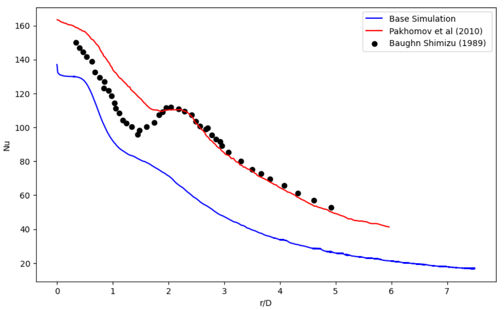
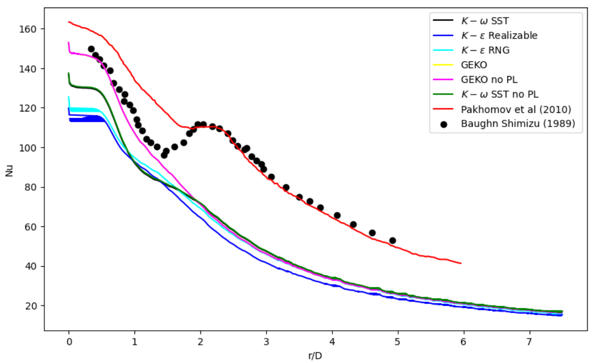
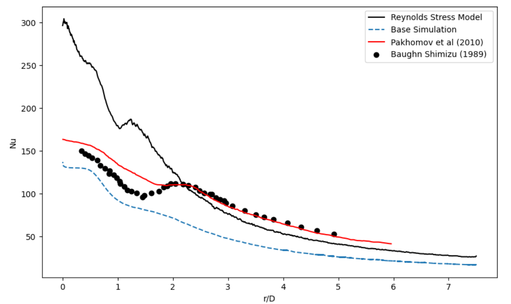
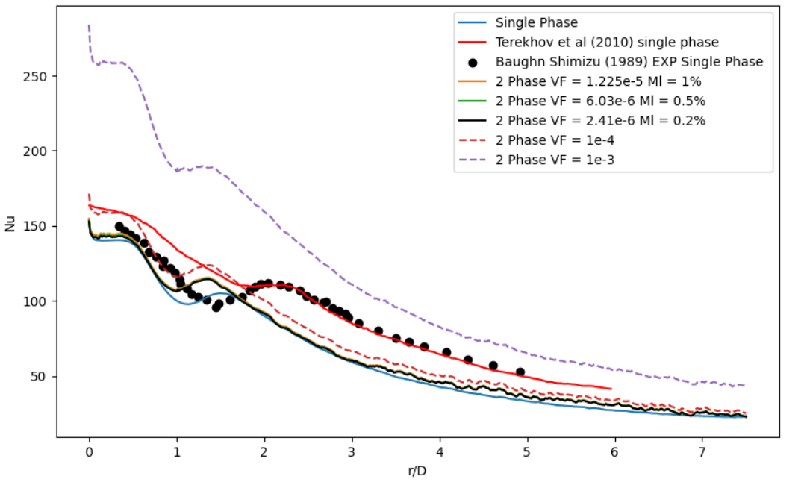

02 · CFD Simulation
This study investigates the heat transfer characteristics of two-phase jet impingement to enhance cooling efficiency, serving as a precursor to modeling liquid hydrogen impingement. Numerical simulations were conducted at a Reynolds number of 23,000 and an H/D ratio of 2, comparing single-phase and two-phase mist-laden jets.
While simulations agreed with experimental benchmarks in the stagnation region, significant divergence occurred in the wall jet region, highlighting limitations in current two-phase turbulence models. The anticipated 80% heat transfer enhancement with mist was not consistently observed, likely due to inaccuracies in converting mass loading fraction to volume fraction. Consequently, the transition to simulating liquid hydrogen jets requires more advanced turbulence modeling and detailed experimental validation.
Aviation accounts for ~2.5% of global CO2 emissions, with high-altitude releases of NOx and particulate matter further amplifying its climate impact. To meet the Paris Agreement goals and achieve net-zero carbon emissions by 2050 (e.g., "Waypoint 2050" strategy), the industry must transition away from fossil-based fuels like kerosene towards sustainable, cleaner alternatives.
Hydrogen offers zero direct carbon emissions and a high gravimetric energy density (142 MJ/kg), making it a promising aviation fuel. However, its low volumetric density requires advanced cryogenic or high-pressure storage. Crucially, hydrogen's high diffusivity, wide flammability range (4% to 75% in air), and low ignition energy introduce significant safety risks, particularly concerning leaks in confined spaces.
This study contributes to hydrogen safety research by investigating the wall heat transfer processes of two-phase impinging jets, which heavily influence hydrogen leak dynamics. Characterizing this heat transfer behavior is vital for developing effective cooling and containment systems to mitigate risks during flight operations.
Jet impingement drives critical heat transfer and fluid flow applications in aerospace. While single-phase air jets provide a baseline for convective cooling, two-phase mist jets (liquid droplets in vapor) enhance heat transfer significantly through phase change and evaporation upon impact, making them ideal for high-heat-flux scenarios.
Cryogenic fluid impingement, such as liquid nitrogen (often used as a safe analog for liquid hydrogen), introduces extreme temperature gradients, rapid boiling, and complex phenomena like the Leidenfrost effect. Analyzing liquid hydrogen jets involves these complex thermal transitions combined with high volatility, making understanding dispersion and cooling effects critical for developing aerospace safety protocols.
The commercial code ANSYS 2023 R1 is used in the present study to solve the discretized equations. The Domain is axisymmetric along the x axis. The diameter of the nozzle is 20 mm but since only half the domain is being simulated we take only 10 mm. The distance between nozzle and the impact wall is 40 mm (H/D = 4). The length of the wall is 150 mm.
The mesh type chosen is unstructured mesh. The computational domain is meshed using triangular cells. The domain is divided in two zones: Jet Zone and an outer Zone. The Jet zone is refined to smaller element sizes to effectively resolve the jet and the impingement in the stagnation zone. The wall is meshed using inflation layers to resolve the heat transfer along the wall. The rest of the domain in the outer zone is meshed coarser. Along the wall a y+ < 1 is considered to model the heat transfer effectively.
The flow is 2D axi-symmetric and gravity is considered in the direction of the jet. The turbulence model selected to model the flow is k-ω SST because of its applicability to jet impingement flows. Production Limiter and Production Kato-Launder are used. Viscous Heating and Low-Re Corrections are not used. The model constants are chosen as the default values in Fluent.
A species transport model is used to model the gaseous phase. A mixture of Air and Water Vapour is considered with the "Diffusion Energy Source" option enabled.
For single-phase jet impingement studies, second-order methods are used for Spatial Discretization with a coupled pressure solver and Pseudo Transient method enabled. For the two-phase jet impingement with mist as the dispersed phase, the Laminar model and 1st order methods are initially used. Once stability is achieved, the viscous model is switched to k-ω SST and 1st order methods are used for spatial discretization.
Single-phase air jet simulations were validated against experimental data and existing numerical results. Velocity profiles show that the simulated jet decelerates less than anticipated in the axial direction, and radial velocities indicate higher-than-expected momentum. Adjusting turbulence intensity (TI) revealed that higher TI (e.g., 20%) increases fluid mixing and viscous dissipation, leading to a more pronounced velocity deficit.
The Nusselt number profiles closely match experimental data in the stagnation point (critical region) but under-predict heat transfer in the wall jet region. Among various turbulence models tested, the Generalized K-ω (GEKO) without Production Limiter (PL) offered the best heat transfer predictions in the critical zone. Interestingly, using a Reynolds Stress Model (RSM) yielded predictions nearly twice as high, emphasizing the need for an-isotropic modifications in standard RSM models for impinging jet flows.
Base Nusselt Number Profile

Effect of Turbulence Models

Reynolds Stress Model Comparison

Two-phase mist jet impingement was simulated using the k-ω SST turbulence model coupled with the Mixture model for species transport. Air served as the primary phase, with water droplets as the secondary phase. Initial results indicated that the addition of mist enhances heat transfer, particularly at higher wall temperatures.
Similar to the single-phase results, numerical predictions aligned well with experimental data in the stagnation region but diverged significantly in the complex wall jet region. This discrepancy highlights the Mixture Model's limitations in accurately capturing intricate turbulent structures, secondary flows, and droplet-boundary layer interactions.
Furthermore, the expected >80% increase in Nusselt number from mist addition was not consistently achieved. This shortfall is largely attributed to the problematic assumption that mass loading fraction (Ml) directly translates to volume fraction (VF) without accounting for droplet size distributions and density differences. Relying solely on Ml is insufficient for characterizing two-phase heat transfer, underscoring the need for more nuanced modeling approaches.
Two-Phase Mist Jet vs Single-Phase Jet
